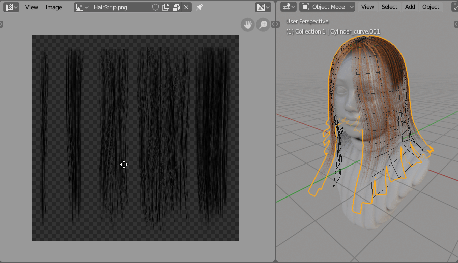

Hair UV's¶
In Hair Tool UVs are stored in material. What this mean is that, if you have two curve ribbons with same material, they both will share same UV. If you wan to have separate UVs, then you have to separate (un-instance) material on both curves. But if you want two curves to have same UV - just link Material from one to the other.
Here is video explaining material creation
Defining UV's¶
In Hair Tool to create UVs we have to make material, which will hold UVs data. Material creation is done automatically by the addon, when you make uv.
 UV boxes creation process in Hair Tool. Left click and drag in UV image editor to define UV area for hair
UV creation for curve hair:
- go into UV editor and search for: ‘Hair UV’ operator under spacebar search menu, and pick: Draw UV's for Hair
- Use Left click and drag rectangular shape, to define the UV bounds for texture. Drag corners of existing UV box and adjust its shape.
- To remove UV box, hover your mouse over one of uv boxes and press [Delete] key
- To reset UV press Shift + Delete
Each UV box will create one material. It is workaround for Blender limitation (Blender can't create UV data for individual splines, hopefully this can be simplified in future).
Note1: In you enabled: 'Random UV flip' in addon preferences, texture will be mirrored in X axis on randomly picked curves. This creates additional materials (one for each mirrored UV box)!
Note2: If you want to flip strand texture in Y direction, just hover your mouse over UV box and press 'F'!
When you are done doing UVs each curve spline will have one UVBox (material slot) assigned to it automatically. You can randomize UVs assignment with Material / UV Refresh. Or you can manually assign materials for each strand with Override Material UV
Offset UV¶
It moves UV points more toward the root or tip on hair strand. As a result you can stretch UVs and change texture look. See video below:
To use UV Offset just hover you mouse over UV box and scroll with MMB.
Material / UV Refresh¶
The best way to edit hair material is to adjust first material slot nodes. Next step would be updating other materials slots, while preserving UVs.
'Material / UV Refresh' button is doing just that - it is propagating material changes from first material slot to the following material slots, while preserving UVs (Boxes).
 Material / UV Refresh with random seed option. It changes random hair strands materials assignment
Material / UV Refresh with random seed option. It changes random hair strands materials assignment
Override Material UV¶
In short: Override random spline material / UV, with selected material index.
In Hair Tool material is connected to UV. If you have made 3 UV boxes then hair object will have 3 materials applied (times 2 if you enabled random mirroring), one for each uv box. Those materials are then randomly applied to each curve strand. You can override random assignment by using 'Override spline UV'.
Note: assigning different material slot manually to each spline will work too, but as soon as you run 'Material / UV Refresh' your changes will be overridden.
 Select splines you want to edit, and run 'Override spline UV'. Under F9 properties change index of UV box / Material that will be applied to selection.
Select splines you want to edit, and run 'Override spline UV'. Under F9 properties change index of UV box / Material that will be applied to selection.
Default Hair Material¶
 Hair Tool has build in hair shader, great for realtime preview in EEVEE.
To use it go to Ctrl+Shift+H Pie Menu, and run:
Hair Tool has build in hair shader, great for realtime preview in EEVEE.
To use it go to Ctrl+Shift+H Pie Menu, and run:
'Import Default Hair material'
Material will be imported and assigned to selected curve ribbons.
Anisotropic switch¶
This is helper function to fix anisotropic specular direction when converting curve ribbons to mesh ribbons.
 Switching from curve ribbons to mesh ribbons break specular direction. 'Anisotropic switch' fixes that.
Switching from curve ribbons to mesh ribbons break specular direction. 'Anisotropic switch' fixes that.